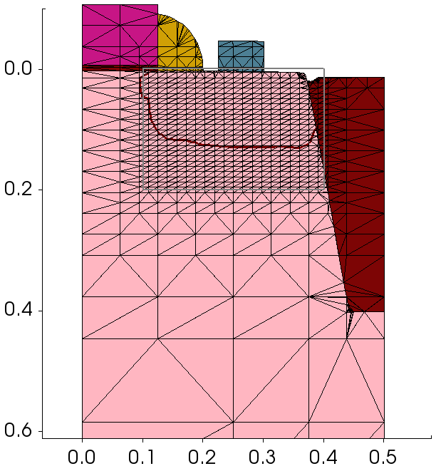
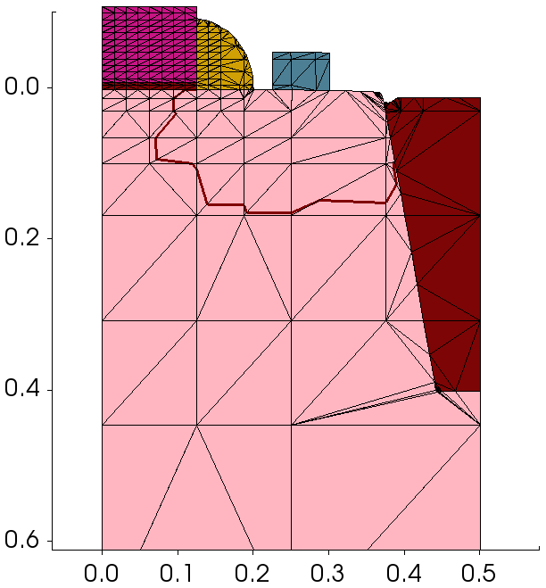
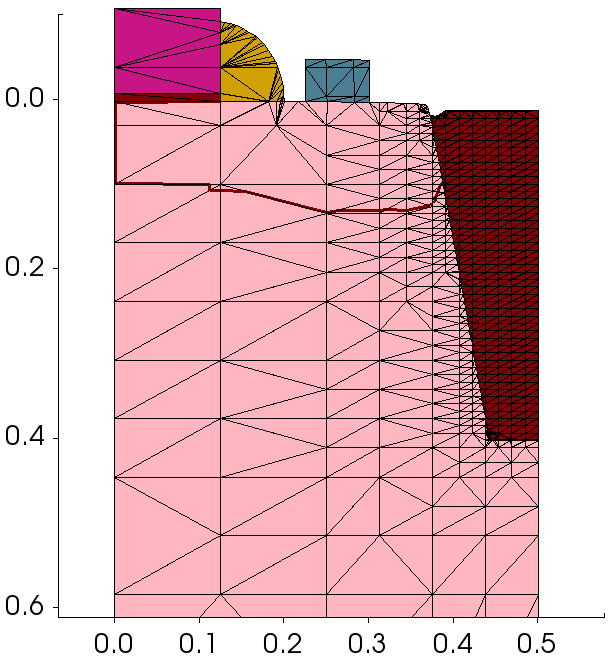
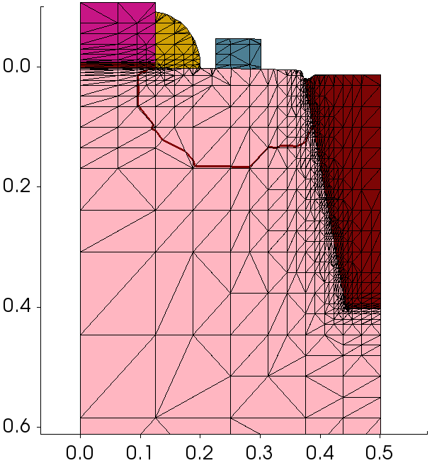
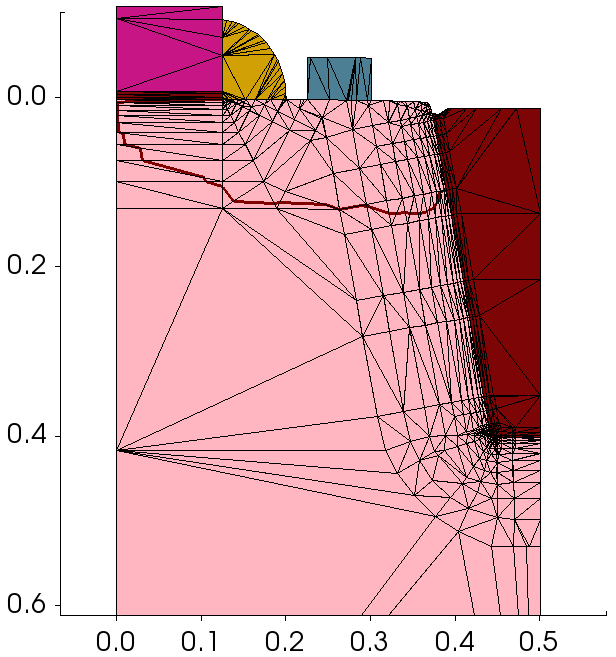
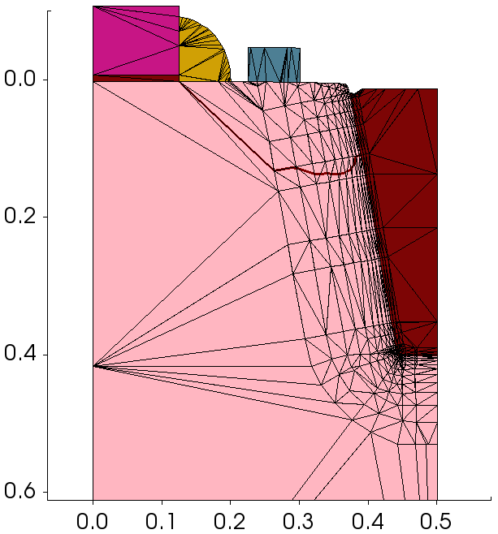
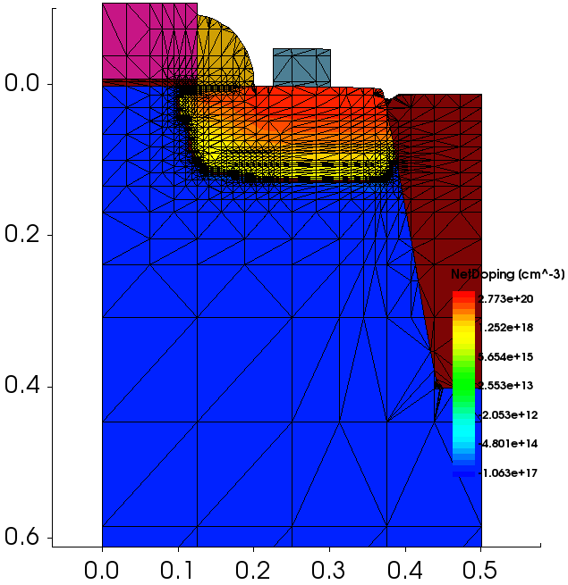
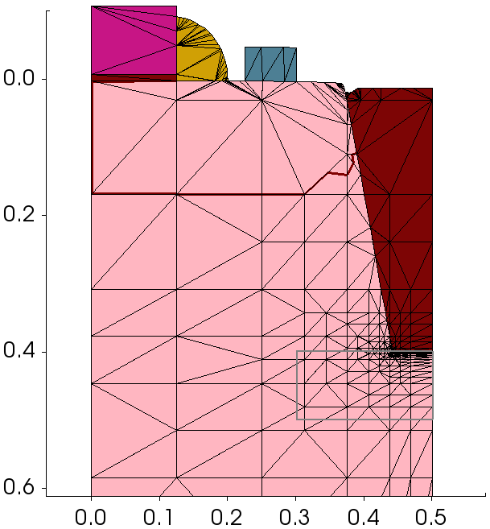
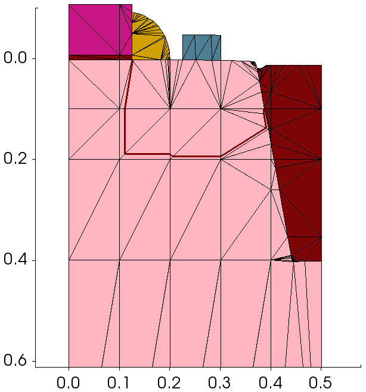

Sentaurus Process
10. Special Focus: Remeshing for Device Simulation
10.1 Overview
10.2 Initialization
10.3 Remeshing Options
Objectives
- To discuss mesh building strategies for device simulation.
- To demonstrate available meshing options in Sentaurus Process.
10.1 Overview
The files discussed in this section are part of the Sentaurus Workbench project Remeshing_for_Device. The complete project can be investigated from within Sentaurus Workbench in the directory Applications_Library/GettingStarted/sprocess/Remeshing_for_Device.
After performing a process simulation, the structure usually needs to be remeshed for device simulation because the requirements of the device simulator differ from those of the process simulator.
This remeshing step is typically performed using Sentaurus Structure Editor and Sentaurus Mesh, but it can also be done with Sentaurus Mesh integrated in Sentaurus Process. Performing this step in Sentaurus Process has advantages such as:
- Familiarity with the meshing syntax of Sentaurus Process, eliminating the need to learn the syntax of a different tool
- The same coordinate system
- Availability of variables defined in the flow
For these reasons, often, you want to perform device meshing in Sentaurus Process as an add-on to the process simulation flow. You can do this by using an additional Sentaurus Process tool instance in the Sentaurus Workbench flow or a split in the Sentaurus Process tool instance.
10.2 Initialization
Before any remeshing operations are performed, it is recommended that the previously defined mesh settings are cleared to avoid any surprises when defining the device mesh:
refinebox clear line clear
In addition, the mesh delaunization type must be changed to boxmethod. The default conformal-type delaunization is not suitable for device simulation:
pdbSet Grid SnMesh DelaunayType boxmethod
After the mesh definitions are specified using the syntax shown in the next subsection, the mesh must be regenerated:
grid remesh
In Sentaurus Process, contact definitions must be performed as the last step, after remeshing for device simulation.
10.3 Remeshing Options
This section describes how different meshing criteria can be implemented in Sentaurus Process. Even though the results of one criterion are shown at a time, a typical device would require multiple criteria to be used for a proper device mesh.
10.3.1 Simple Refinement Box
refinebox min= {0 0.1} max= {0.2 0.4} xrefine= 0.010 yrefine= 0.020
This example shows how to generate a uniform refinement inside a rectangular box (cuboid in three dimensions).

Figure 1. Simple refinement box.
10.3.2 Refinement in a Particular Material
refinebox PolySilicon xrefine= 0.010 yrefine= 0.020
This example shows how to generate a uniform refinement inside a particular material, PolySilicon in this case.

Figure 2. Refinement in a particular material.
10.3.3 Refinement in a Particular Region
refinebox regions= {Oxide_1.1} xrefine= 0.010 yrefine= 0.020
This example shows how to generate a uniform refinement inside a particular region, Oxide_1.1 in this case.

Figure 3. Refinement in a particular region.
10.3.4 Refinement at Interface Between Two Materials
refinebox interface.mat.pairs= {Silicon Oxide} \
min.normal.size= 0.002 normal.growth.ratio= 1.5
This example shows how to generate a refinement at the interface between two materials. Refinement is performed on both sides of the interface.

Figure 4. Interface refinement.
10.3.5 Offsetting at Interface Between Two Materials
refinebox offsetting interface.materials= {Silicon} offsetting.maxlevel= 10
refinebox offsetting interface.mat.pairs= {Silicon Oxide} \
min.normal.size= 0.005 normal.growth.ratio= 1.5
At interfaces that are not axis-aligned or curved, interface refinement causes many mesh points to be consumed. In such cases, it might be better to use interface offsetting, which creates mesh lines that run parallel to the interface. The number of mesh lines generated at each side of the interface can be controlled with the offsetting.maxlevel argument.

Figure 5. Interface offsetting.
10.3.6 Offsetting at Interface Between Two Regions
grid set.min.normal.size= 0
refinebox offsetting interface.regions= {Silicon_1} offsetting.maxlevel= 10
refinebox offsetting interface.region.pairs= {Silicon_1 Oxide_1.1} \
min.normal.size= 0.003 normal.growth.ratio= 1.3
This is similar to the previous case, except that offsetting is performed between two specific regions.

Figure 6. Interface offsetting between regions.
10.3.7 Refinement on Net Doping
refinebox Silicon refine.fields= {NetActive} max.asinhdiff= {NetActive=1.0} \
refine.min.edge= {0.004 0.004} refine.max.edge= {0.25 0.15}
To refine on doping, adaptive meshing must be switched on. Meshing is performed adaptively on asinh(NetActive) with an asinh difference of 1.0 and a minimum mesh spacing of 4 nm.

Figure 7. Refinement on net doping.
10.3.8 Interface Refinement Restricted to a Window
refinebox interface.mat.pairs= {Silicon Oxide} \
min= {0.4 0.3} max= {0.5 0.5} \
min.normal.size= 0.002 normal.growth.ratio= 1.5
Sometimes, you want to restrict interface refinement to only a part of the interface. In such cases, simply add a refinement window to the interface refinement command.

Figure 8. Interface refinement restricted to a window.
10.3.9 Adding Manual Mesh Lines
pdbSet Grid MGoals UseLines 1 line x location= 0.1 line x location= 0.2 line x location= 0.4 line y location= 0.1 line y location= 0.2 line y location= 0.3 line y location= 0.4
In certain cases, you might want to add mesh lines at specific locations. You can do this using the Sentaurus Process line command. Manual mesh lines also partition the structure such that refinements defined on one side of a mesh line do not propagate to the other side.

Figure 9. Adding manual mesh lines.
Copyright © 2022 Synopsys, Inc. All rights reserved.